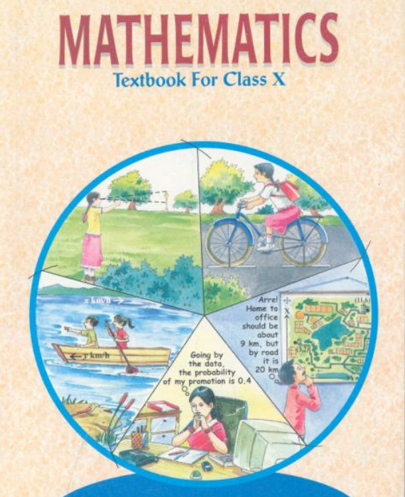

Class 10 Mathematics NCERT Solutions
Chapter-wise NCERT Solutions for the latest CBSE Class 10 Mathematics textbook.

Master Class 10 Mathematics with our free, chapter-wise NCERT Solutions, carefully prepared according to the latest CBSE syllabus and examination pattern. Every solution is explained in a simple, step-by-step manner to help students understand concepts clearly instead of just memorising answers. From solving daily homework and clearing classroom doubts to revising important formulas and practising before examinations, these solutions serve as a complete learning companion. Each answer is prepared by experienced educators, ensuring 100% accurate, easy-to-follow, and exam-oriented explanations. Whether you are studying Real Numbers, Polynomials, Quadratic Equations, Arithmetic Progressions, Coordinate Geometry, Trigonometry, Circles, Surface Areas & Volumes, Statistics, or Probability, you will find detailed solutions for every exercise and question. Regular practice with these NCERT Solutions strengthens conceptual understanding, improves problem-solving speed and accuracy, boosts confidence, and helps students perform their best in school tests as well as the CBSE Class 10 Board Examination. Start learning today and build a strong mathematical foundation with Saraswat Academy.
Chapter-wise Solutions for Class 10 Mathematics
Chapter 1 - Real NumbersOpen → Chapter 2 - PolynomialsOpen → Chapter 3 - Pair of Linear Equations in Two VariablesOpen → Chapter 4 - Quadratic EquationsOpen → Chapter 5 - Arithmetic ProgressionsOpen → Chapter 6 - TrianglesOpen → Chapter 7 - Coordinate GeometryOpen → Chapter 8 - Introduction to TrigonometryOpen → Chapter 9 - Some Applications of TrigonometryOpen → Chapter 10 - CirclesOpen → Chapter 11 - Areas Related to CirclesOpen → Chapter 12 - Surface Areas and VolumesOpen → Chapter 13 - StatisticsOpen → Chapter 14 - ProbabilityOpen →Frequently Asked Questions (FAQs) – Class 10 Maths NCERT Solutions
1. Are NCERT Solutions enough to score 95+ marks in Class 10 Mathematics?
Yes. NCERT is the most important book for CBSE Class 10 Mathematics. Most board examination questions are directly or indirectly based on NCERT concepts, examples, and exercises.
If you complete every NCERT exercise, revise regularly, and practise CBSE Sample Papers and Previous Year Question Papers, scoring 95+ marks is absolutely achievable.
2. Are these NCERT Solutions based on the latest CBSE syllabus?
Yes. All solutions are prepared according to the latest CBSE syllabus and the newest NCERT textbook.
The content is updated whenever CBSE or NCERT makes changes to the curriculum, ensuring students always study the correct material.
3. Which book is best for Class 10 Maths preparation?
Experienced teachers recommend the following study order:
- NCERT Textbook – The most important and compulsory book for every student.
- NCERT Exemplar – Best for competency-based and Higher Order Thinking Skills (HOTS) questions.
- RD Sharma – Excellent for concept building and extensive practice.
- RS Aggarwal – Useful for improving calculation speed and practising additional questions.
- CBSE Sample Papers & Previous Year Papers – Essential for final board examination preparation.
Always complete the NCERT textbook before starting any reference book.
4. Which is better: RD Sharma or RS Aggarwal?
| Book | Best For |
|---|---|
| RD Sharma | Strong conceptual understanding, detailed explanations, and a large variety of practice questions. |
| RS Aggarwal | Quick practice, faster calculations, and additional question solving. |
Both books are excellent reference books.
If you can study only one, most Mathematics teachers recommend completing NCERT first and then practising RD Sharma.
5. Is RD Sharma necessary for the CBSE Board Examination?
No. RD Sharma is not compulsory.
Thousands of students score above 95% every year by thoroughly completing NCERT, NCERT Exemplar, and CBSE Sample Papers.
RD Sharma is mainly recommended for students who want extra practice and stronger conceptual understanding.
6. Is NCERT Exemplar important for Class 10 Maths?
Yes. NCERT Exemplar contains competency-based, application-based, and higher-order thinking questions.
It improves logical thinking, conceptual clarity, and problem-solving ability, making it highly beneficial for students aiming for excellent board marks.
7. Which chapters are most important for the CBSE Board Examination?
Every chapter is important because CBSE can ask questions from any topic.
However, chapters such as Quadratic Equations, Arithmetic Progressions, Coordinate Geometry, Trigonometry, Applications of Trigonometry, Circles, Surface Areas & Volumes, Statistics, and Probability generally carry significant weightage.
8. What is the best strategy to prepare for Class 10 Maths?
- Complete every NCERT exercise.
- Understand concepts instead of memorising answers.
- Revise important formulas regularly.
- Solve NCERT Exemplar.
- Practise CBSE Sample Papers.
- Solve Previous Year Question Papers.
- Analyse mistakes after every test.
9. How many hours should I study Mathematics every day?
A focused study session of 1.5 to 2 hours every day is sufficient for most students.
Regular practice is much more effective than studying for long hours without concentration.
10. How can I improve my calculation speed?
Solve Mathematics questions every day without using a calculator.
Revise formulas regularly, practise mental calculations, solve timed worksheets, and attempt full-length mock tests.
Consistency is the key to improving speed and accuracy.
11. Can weak students score above 90 marks in Mathematics?
Yes. Many students improve dramatically through regular practice and proper guidance.
Focus on understanding concepts, solving NCERT multiple times, revising formulas, and analysing mistakes after every practice test.
12. Are these NCERT Solutions free?
Yes. All chapter-wise NCERT Solutions available on Saraswat Academy are completely free.
Students can use them for homework, revision, concept learning, and CBSE Board Examination preparation anytime.
13. Do these NCERT Solutions help in competitive examinations?
Yes. A strong understanding of Class 10 Mathematics forms the foundation for Class 11 and Class 12 Mathematics.
It also helps students preparing for competitive examinations such as JEE, NDA, CUET, Olympiads, and scholarship tests.
14. What is the biggest mistake students make while preparing for Class 10 Maths?
The biggest mistake is memorising solutions without understanding the underlying concepts.
Another common mistake is ignoring NCERT and relying only on guidebooks.
Experts recommend attempting every question independently before checking the solution.
15. Why should I use Saraswat Academy NCERT Solutions?
Saraswat Academy provides accurate, step-by-step, and easy-to-understand NCERT Solutions prepared according to the latest CBSE syllabus.
Every solution is designed to improve conceptual understanding, strengthen problem-solving skills, and help students achieve excellent marks in school examinations as well as the CBSE Class 10 Board Examination.